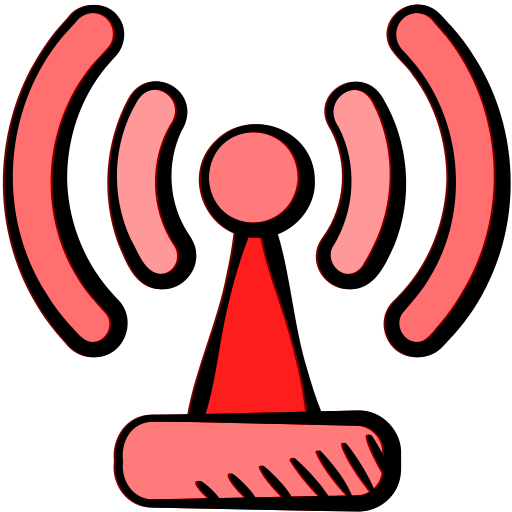

<html lang="en">
	<head>
		<meta charset="utf-8">
		<meta name="viewport" content="width=device-width, initial-scale=1">
		
		<title>Raspberry Shake</title>
		<!-- leaflet css library -->
		<link rel="stylesheet" href="leaflet/leaflet.css">
		<!-- leaflet js library -->
		<script src="leaflet/leaflet.js"></script>
		<!-- ajax library for fetching json/geojson files-->
		<script src="https://ajax.googleapis.com/ajax/libs/jquery/3.6.0/jquery.min.js"></script>


		<!-- css for styling maps in html -->
		<style>
			/* size of html body */
			html, body {
				height: 100%;
				margin: 0;
			}
			
			/* map id */
			#map { position: absolute; top: 0; bottom: 0; width: 100%; }
		</style>
	</head>
	<body>
		<!-- initialize map -->
		<!-- set the id of map and call it using css and js -->
		<div id="map"></div>
		<script>
			// initialize map options
			var map_options = {
				minZoom: 5.5,
				maxZoom: 10,
				zoomSnap: 0.5,
				zoomDelta: 0.5,
				zoomControl: false
			}
			// initialize map using js
			// id of map
			var map = L.map('map', map_options).setView([12.629, 123.508], 6);
			L.control.scale({position: 'bottomright'}).addTo(map)
			L.control.zoom({position: 'bottomright'}).addTo(map)
			L.Control.textbox = L.Control.extend({
				onAdd: function(map) {
					
				var text = L.DomUtil.create('div');
				text.id = "info_text";
				text.innerHTML = `<div style="background-color: white; padding: 1px;"><h1>RaspberryShake Stations</h1></div>`
				return text;
				},
			});
			L.control.textbox = function(opts) { return new L.Control.textbox(opts);}
			L.control.textbox({ position: 'topleft' }).addTo(map);
			// initialize base map layers
			var osm = L.tileLayer('https://tile.openstreetmap.org/{z}/{x}/{y}.png', {
				attribution: '&copy; <a href="http://www.openstreetmap.org/copyright">OpenStreetMap</a>'
			}).addTo(map);
			var carto = L.tileLayer('https://{s}.basemaps.cartocdn.com/light_all/{z}/{x}/{y}{r}.png', {
				attribution: '&copy; <a href="https://www.openstreetmap.org/copyright">OpenStreetMap</a> contributors &copy; <a href="https://carto.com/attributions">CARTO</a>',
				subdomains: 'abcd'
			});
			var baseMaps = {
				"OpenStreetMap": osm,
				"CARTO": carto
			}
			var overlayMaps = {}
			
			// icon of markers
			var markerIcons = {
				"online": L.icon({
					iconUrl: "images/online.png",
					iconSize: [20, 20]
				}),
				"offline": L.icon({
					iconUrl: "images/offline.png",
					iconSize: [20, 20]
				}),
			}
			var onlineUrl = `http://127.0.0.1:8000/api/stations/?online=true`
			var offlineUrl = `http://127.0.0.1:8000/api/stations/?online=false`
			var endDate = new Date()
			var startDate = new Date(new Date().setDate(endDate.getDate()-30))
			var quakeUrl = `http://127.0.0.1:8000/api/quakes/?timestamp__range=${startDate.toJSON()},${endDate.toJSON()}`
			
			$.when($.getJSON("online.json"), $.getJSON("offline.json"), $.getJSON("quake.json")).done(function(online, offline, quake){
				// Marker for Online Stations
				var onlineMarker = L.geoJson(online[0],{
					pointToLayer: function(feature, latlng){
						return L.marker(latlng, {icon: markerIcons["online"]});
					},
				}).addTo(map)
				onlineMarker.on('click', markerOnClick);
				overlayMaps[` - ONLINE`] = onlineMarker
				// Marker for Offline Stations
				var offlineMarker = L.geoJson(offline[0],{
					pointToLayer: function(feature, latlng){
						return L.marker(latlng, {icon: markerIcons["offline"]});
					},
				})
				offlineMarker.on('click', markerOnClick);
				console.log(onlineMarker, offlineMarker, quakeMarker)
				overlayMaps[` - OFFLINE`] = offlineMarker
				// Marker for Earthquakes
				var quakeMarker = L.geoJson(quake[0],{
					pointToLayer: function(feature, latlng){
						return L.marker(latlng, {icon: L.icon({
								iconUrl: "images/quake.png",
								iconSize: [parseInt(5+ 5*feature.properties.mag), parseInt(5+ 5*feature.properties.mag)]
							})}
						);
					},
				})
				quakeMarker.on('click', markerOnClick);
				overlayMaps[` - EARTHQUAKE`] = quakeMarker

				// Add legend in map
				L.control.layers(baseMaps, overlayMaps, {position: 'bottomleft', collapsed: false}).addTo(map);
			})

			function markerOnClick(e){
				// get properties of clicked marker
				var prop = e.layer.feature.properties
				var id = prop.pk.toUpperCase()
				// Station
				if (id.length==5){
					var code = `<h2>${id}: ${prop.online ? "ONLINE" : "OFFLINE"}</h2><hr>`
					var elev = `<b>Elevation:</b> ${parseFloat(prop.elev)} m`
					if(prop.online){
						var acc = `<b>Acceleration:</b> ${parseFloat(prop.acc)} µm/s<sup>2</sup>`
						var vel = `<b>Velocity:</b> ${parseFloat(prop.vel)} µm/s`
						var disp = `<b>Displacement:</b> ${parseFloat(prop.disp)} µm`
						var timestamp = `<b>Timestamp:</b> ${prop.timestamp}`
						
						var output = `${code}<h3>Ground Motion</h3>${acc}</br>${vel}</br>${disp}</br>${elev}</br>${timestamp}</br>`
					}
					else{
						var output = `${code}${elev}`
					}
				}
				// Quakes
				else{
					var mag = `<h2>Magnitude: ${parseFloat(prop.mag)}</h2>`
					var depth = `<b>Depth:</b> ${parseFloat(prop.depth)} km`
					var agency = `<b>Agency:</b> ${prop.agency.toUpperCase()}`
					var coords = e.layer.feature.geometry.coordinates
					coords = `<b>Coordinates:</b> (${coords[1]}, ${coords[0]})`
					var location = `<b>Location:</b> ${prop.location}`
					var timestamp = `<b>Timestamp:</b> ${prop.timestamp}`
					var code = `<b>Earthquake ID:</b> ${id}`
					var output = `${mag}${depth}<br>${location}<br>${coords}<br><hr>${code}</br>${agency}</br>${timestamp}</br>`
				}
				// create popup for marker
				map.flyTo(e.latlng, 9, {
						animate: true,
						duration: 0.5
				});
				L.popup()
				.setLatLng(e.latlng)
				.setContent(`${output}`)
				.openOn(map);
			}
		</script>
	</body>
</html>
